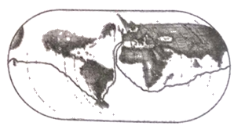
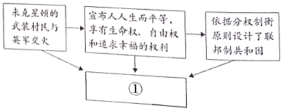

2020年北京市中考历史试题 · 选择题 第21、22、23、24、25题
21．从13世纪晚期到16世纪，欧洲出现了对古典文明的再发现，但最令人感兴趣的成就都是全新的，因此，当时主要是“兴”，而不是“复兴”。其中的“兴”是指（ ）
A．对古典文化的全面继承B．中世纪西欧城市的兴起
C．人文主义思潮逐渐流行D．文艺复兴向西欧的传播
22．如图是绘制于1543年的地球平面球形图，图中的航线是（ ）

A．达•伽马到达印度B．哥伦布首次到达美洲
C．麦哲伦船队环球航行D．“三角贸易”路线
23．示意图能够勾勒出史实之间的关系。如图示意图中①处应为（ ）

A．英国“光荣革命”B．美国的建立
C．美国内战D．日本明治维新
24．《拿破仑法典》第8条和第537条规定：“所有法国人都享有民事权”“私人得自由处分属于其所有的财产”，可以看出法典（ ）
①体现法律面前人人平等
②保护私有财产权
③意在压榨欧洲各国人民
④维护君主立宪制
A．①②B．①③C．②④D．③④
25．多数历史学家认为，第一次世界大战的爆发应由欧洲列强分摊责任，德国不是战争的唯一发动者。以下能说明这一观点的是（ ）
A．第二次工业革命使德国迅速发展
B．三国同盟和三国协约的扩军备战
C．交战国使用了许多新式武器
D．战争造成巨大的人员伤亡